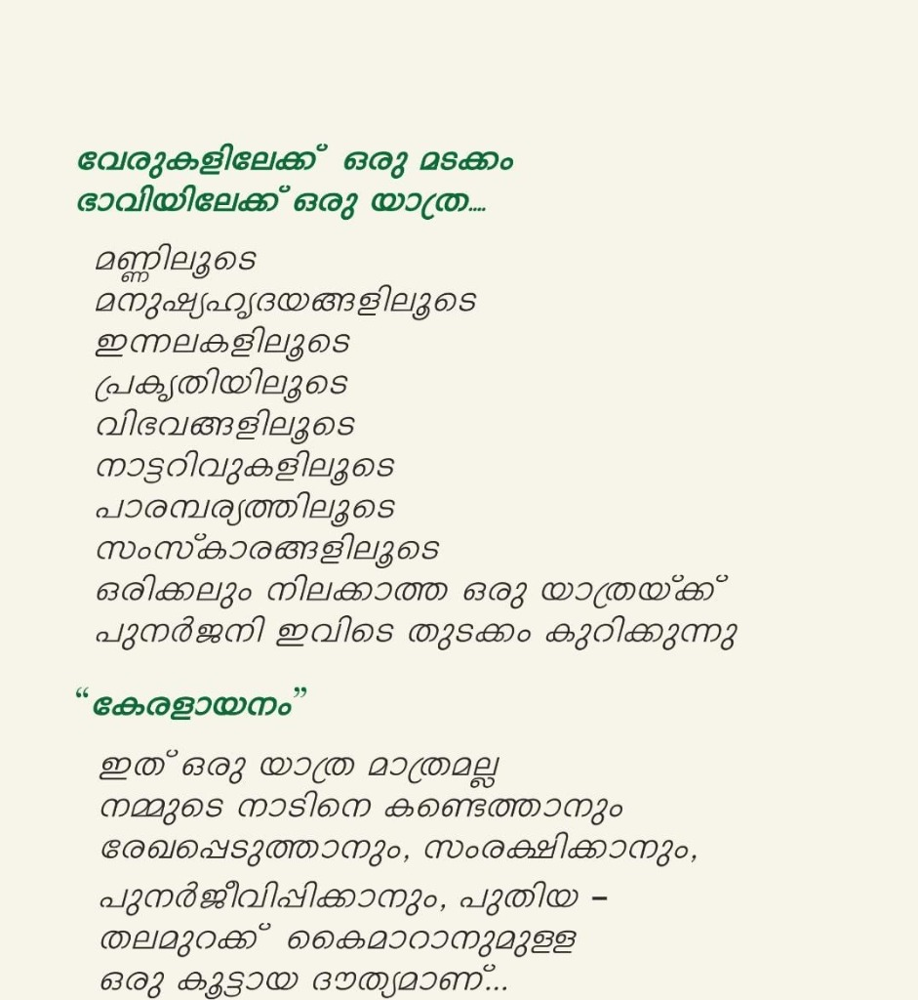
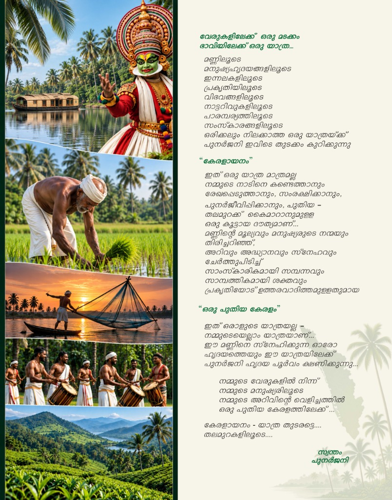

പുനർജനി കേരളത്തിൽ നിന്ന് ആരംഭിക്കുന്ന ഒരു ആശയമാണ്; എന്നാൽ അതിന്റെ സ്വപ്നം കേരളത്തിന്റെ അതിരുകൾക്കപ്പുറമാണ് — ഭാരതത്തിലേക്ക്, ഭാരതത്തിന്റെ വൈവിധ്യങ്ങളിലൂടെ ലോകത്തിലേക്ക്.
ഭാഷകൾ വ്യത്യസ്തമാണ്. സംസ്കാരങ്ങൾ വ്യത്യസ്തമാണ്. വസ്ത്രധാരണവും ഭക്ഷണരീതികളും കലകളും ആചാരങ്ങളും അനുഷ്ഠാനങ്ങളും ജീവിതരീതികളും വ്യത്യസ്തമാണ്. എന്നാൽ ഈ വൈവിധ്യങ്ങളുടെ ആഴത്തിൽ നമ്മെ ഒരുമിപ്പിക്കുന്ന ഒരു വലിയ തിരിച്ചറിവുണ്ട് — നാം ഭാരതത്തിന്റെ ഭാഗമാണ്.
കേരളത്തിന്റെ മണ്ണിൽ നിന്ന് ആരംഭിച്ച്, ഇന്ത്യയുടെ വിവിധ സംസ്ഥാനങ്ങളിലേക്കും ജനവിഭാഗങ്ങളിലേക്കും അറിവുകളിലേക്കും സംസ്കാരങ്ങളിലേക്കും സഞ്ചരിച്ച്, പരസ്പരം അറിയാനും മനസ്സിലാക്കാനും പങ്കുവെക്കാനും ഒരുമിച്ച് വളരാനും കഴിയുന്ന ഒരു പുതിയ യാത്ര.
പ്രാദേശിക വേരുകളിൽ നിന്ന് ദേശീയ ഐക്യത്തിലേക്ക്… ദേശീയ സാധ്യതകളിൽ നിന്ന് ആഗോള മുന്നേറ്റത്തിലേക്ക്… ഇതാണ് പുനർജനിയുടെ യാത്ര.

The foundational ideals and driving purposes behind Punarjani Charitable Trust.
Core Meaning: Discovering the boundless harmony beneath India's cultural tapestry, empowering indigenous knowledge, human potential, and technology to build an equitable, sustainable future for all.
Core Meaning: Honoring our soil, embracing community welfare, awakening knowledge, nurturing skills, and elevating local agrarian and cultural strengths into national pride and global progress.
സപ്ത ദൗത്യങ്ങൾ — The seven core pillars guiding all Punarjani initiatives.
ഭാരതത്തിന്റെ വൈവിധ്യമാർന്ന സംസ്കാരങ്ങളും പാരമ്പര്യങ്ങളും കണ്ടെത്തുകയും സംരക്ഷിക്കുകയും പുതുതലമുറയിലേക്ക് പകരുകയും ചെയ്യുക.
വിദ്യാർത്ഥികളുടെയും യുവജനങ്ങളുടെയും അറിവും കഴിവും സർഗാത്മകതയും സംരംഭകത്വവും പാഠപുസ്തകങ്ങൾക്കപ്പുറം വികസിപ്പിക്കുക.
കർഷകരെയും ഗ്രാമീണ സമൂഹങ്ങളെയും ശക്തിപ്പെടുത്തി, ഭാരതത്തിന്റെ തനതായ കാർഷിക സമ്പത്തിനെ മൂല്യവർധിത ഉൽപ്പന്നങ്ങളാക്കി ലോകവിപണിയിലേക്ക് എത്തിക്കുക.
പ്രകൃതിയെയും പൈതൃകത്തെയും മനുഷ്യവിഭവശേഷിയെയും സംരക്ഷിച്ചുകൊണ്ട് സുസ്ഥിര വികസനത്തിന്റെ മാതൃകകൾ സൃഷ്ടിക്കുക.
വിവിധ സംസ്ഥാനങ്ങളിലെ ഭാഷ, കല, ഭക്ഷണം, വസ്ത്രം, ആചാരം, അനുഷ്ഠാനം, ജീവിതരീതി, അറിവ് എന്നിവ പരസ്പരം പരിചയപ്പെടുത്തുന്ന വേദികൾ സൃഷ്ടിക്കുക.
ശാസ്ത്രം, സാങ്കേതികവിദ്യ, ഗവേഷണം, നവീകരണം എന്നിവയെ സമൂഹത്തിന്റെ യഥാർത്ഥ ആവശ്യങ്ങളുമായി ബന്ധിപ്പിക്കുക.
പ്രാദേശികതയെ അതിജീവിച്ച് ദേശീയതയിലേക്കും, ദേശീയതയിൽ നിന്ന് ആഗോള സഹകരണത്തിലേക്കും വളരുന്ന കൂട്ടായ്മകൾ രൂപപ്പെടുത്തുക.

Keralaayanam is Punarjani Trust's historic cultural expedition across all 14 districts of Kerala, designed to rediscover roots, connect community artisans, and unite generations.
“മണ്ണിനെയും മനുഷ്യനെയും ചേർത്തുപിടിച്ച് ഒരു നവഭാരത സൃഷ്ടിക്കായി നമുക്ക് കൈകോർക്കാം.”
Scan with any UPI app (GPay, PhonePe, Paytm, BHIM) to contribute: